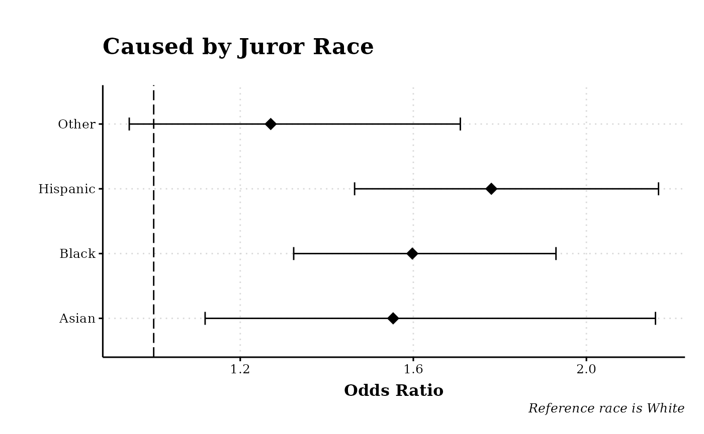

library(juryR)
library(tidyverse)
#> ── Attaching packages ─────────────────────────────────────── tidyverse 1.3.2 ──
#> ✔ ggplot2 3.3.6 ✔ purrr 0.3.4
#> ✔ tibble 3.1.8 ✔ dplyr 1.0.9
#> ✔ tidyr 1.2.0 ✔ stringr 1.4.0
#> ✔ readr 2.1.2 ✔ forcats 0.5.1
#> ── Conflicts ────────────────────────────────────────── tidyverse_conflicts() ──
#> ✖ dplyr::filter() masks stats::filter()
#> ✖ dplyr::lag() masks stats::lag()
library(broom.mixed)
data("bullpen")
# Calculate odds ratios
calculate_odds <- function(model) {
exp(cbind(OR = coef(model), confint(model)))
}
# Get coefficient positions
get_coef_positions <- function(model) {
tibble(tidy(model$coefficients)) |>
dplyr::mutate(position = row_number(), .before = names)
}
# Plot odds ratios (#1)
plot_odds_ratios <- function(model, caption) {
odds <- tibble(as_tibble_col(tibble(tidy(model$coefficients))$names),
as_tibble(exp(cbind(OR = coef(model), confint(model)))),
std_err = tibble(summary(model)$coefficients[, 2]))
odds[-1, ] |>
filter(std_err < 2) |>
ggplot(aes(y = value, x = OR, label = value)) +
geom_errorbarh(aes(
xmin = `2.5 %`,
xmax = `97.5 %`
),
height = 0.2
) +
geom_point(size = 4, shape = 18, color = "black") +
geom_vline(xintercept = 1, linetype = "longdash") +
scale_y_discrete(labels = c(
"jur_race_wAsian" = "Asian",
"jur_race_wBlack" = "Black",
"jur_race_wHispanic" = "Hispanic",
"jur_race_wOther" = "Other",
"i_30Split" = "I-30 (Split)",
"i_30North" = "I-30 North",
"i_30Split:jur_race_wOther" = "I-30 (split) * Race (Other)",
"i_30Split:jur_race_wHispanic" = "I-30 (split) * Race (Hispanic)",
"i_30Split:jur_race_wBlack" = "I-30 (split) * Race (Black)",
"i_30Split:jur_race_wAsian" = "I-30 (split) * Race (Asian)",
"i_30North:jur_race_wOther" = "I-30 (North) * Race (Other)",
"i_30North:jur_race_wHispanic" = "I-30 (North) * Race (Hispanic)",
"i_30North:jur_race_wBlack" = "I-30 (North) * Race (Black)",
"i_30North:jur_race_wAsian" = "I-30 (North) * Race (Asian)",
"age_group55 +" = "Age Group 55 and Up",
"age_group45 - 54" = "Age Group 45 - 54",
"age_group31 - 44" = "Age Group 31 - 44",
"i_30Split:age_group55 +" = "I-30 (split) * Age Group 55 and Up",
"i_30Split:age_group45 - 54" = "I-30 (split) * Age Group 45 - 54",
"i_30Split:age_group31 - 44" = "I-30 (split) * Age Group 31 - 44",
"i_30North:age_group55 +" = "I-30 (North) * Age Group 55 and Up",
"i_30North:age_group45 - 54" = "I-30 (North) * Age Group 45 - 54",
"i_30North:age_group31 - 44" = "I-30 (North) * Age Group 31 - 44",
"jur_gendOther" = "Other",
"jur_gendMale" = "Male",
"i_30Split:jur_gendOther" = "I-30 (split) * Other",
"i_30Split:jur_gendMale" = "I-30 (split) * Male",
"i_30North:jur_gendOther" = "I-30 (North) * Other",
"i_30North:jur_gendMale" = "I-30 (North) * Male"
)) +
labs(
caption = caption,
x = "Odds Ratio",
y = ""
) +
ggthemes::theme_foundation() +
theme(
plot.title = element_text(
face = "bold",
family = "Georgia",
size = rel(1.4), hjust = 0, margin = margin(0, 0, 20, 0)
),
text = element_text(),
panel.background = element_rect(colour = NA),
plot.background = element_rect(colour = NA),
panel.border = element_rect(colour = NA),
axis.title = element_text(
face = "bold",
family = "Georgia",
size = rel(1)
),
axis.title.y = element_text(angle = 90, vjust = 2),
axis.title.x = element_text(vjust = -0.2, hjust = 0.5),
axis.text = element_text(family = "Georgia"),
axis.line.x = element_line(colour = "black"),
axis.line.y = element_line(colour = "black"),
axis.ticks = element_line(),
panel.grid.major = element_line(
colour = "#d8d8d8",
size = 0.5,
linetype = "dotted"
),
panel.grid.minor = element_blank(),
plot.caption = element_text(
face = "italic",
family = "Georgia"
),
legend.key = element_rect(colour = NA),
legend.position = "bottom",
legend.direction = "horizontal",
legend.box = "vertical",
legend.key.size = unit(0.5, "cm"),
# legend.margin = unit(0, "cm"),
legend.title = element_text(face = "italic"),
plot.margin = unit(c(10, 5, 5, 5), "mm"),
strip.background = element_rect(colour = "#f0f0f0", fill = "#f0f0f0"),
strip.text = element_text(face = "bold")
)
}
# Plot odds ratios (#2)
plot_odds_ratios2 <- function(model, caption) {
odds <- tibble(as_tibble_col(tibble(tidy(model$coefficients))$names),
as_tibble(exp(cbind(OR = coef(model), confint(model)))),
std_err = tibble(summary(model)$coefficients[, 2]))
odds[-1, ] |>
filter(std_err < 2) |>
ggplot(aes(y = value, x = OR, label = value)) +
xlim(0.5, 11) +
geom_errorbarh(aes(
xmin = `2.5 %`,
xmax = `97.5 %`
),
height = 0.2
) +
geom_point(size = 4, shape = 18, color = "black") +
geom_vline(xintercept = 1, linetype = "longdash") +
scale_y_discrete(labels = c(
"jur_race_wAsian" = "Asian",
"jur_race_wBlack" = "Black",
"jur_race_wHispanic" = "Hispanic",
"jur_race_wOther" = "Other",
"jur_race_oWhite" = "Other",
"jur_raceWhite" = "Black",
"jur_race_aWhite" = "Asian",
"jur_race_hWhite" = "Hispanic",
"jur_race_oHispanic" = "Hispanic",
"jur_race_oBlack" = "Black",
"jur_race_oAsian" = "Asian",
"age_group55 +" = "Age Group 55 and Up",
"age_group45 - 54" = "Age Group 45 - 54",
"age_group31 - 44" = "Age Group 31 - 44"
)) +
labs(
caption = caption,
x = "Odds Ratio",
y = ""
) +
ggthemes::theme_foundation() +
theme(
plot.title = element_text(
face = "bold",
family = "Georgia",
size = rel(1.4), hjust = 0, margin = margin(0, 0, 20, 0)
),
text = element_text(),
panel.background = element_rect(colour = NA),
plot.background = element_rect(colour = NA),
panel.border = element_rect(colour = NA),
axis.title = element_text(
face = "bold",
family = "Georgia",
size = rel(1)
),
axis.title.y = element_text(angle = 90, vjust = 2),
axis.title.x = element_text(vjust = -0.2, hjust = 0.5),
axis.text = element_text(family = "Georgia"),
axis.line.x = element_line(colour = "black"),
axis.line.y = element_line(colour = "black"),
axis.ticks = element_line(),
panel.grid.major = element_blank(),
panel.grid.minor = element_blank(),
plot.caption = element_text(
face = "italic",
family = "Georgia"
),
legend.key = element_rect(colour = NA),
legend.position = "bottom",
legend.direction = "horizontal",
legend.box = "vertical",
legend.key.size = unit(0.5, "cm"),
# legend.margin = unit(0, "cm"),
legend.title = element_text(face = "italic"),
plot.margin = unit(c(10, 5, 5, 5), "mm"),
strip.background = element_rect(colour = "#f0f0f0", fill = "#f0f0f0"),
strip.text = element_text(face = "bold")
)
}
# Plot odds ratios #3
plot_odds_ratios3 <- function(model, caption) {
odds <- tibble(as_tibble_col(tibble(tidy(model$coefficients))$names),
as_tibble(exp(cbind(OR = coef(model), confint(model)))),
std_err = tibble(summary(model)$coefficients[, 2]))
odds[-1, ] |>
filter(std_err < 2) |>
ggplot(aes(y = value, x = OR, label = value)) +
xlim(0.5, 2) +
geom_errorbarh(aes(
xmin = `2.5 %`,
xmax = `97.5 %`
),
height = 0.2
) +
geom_point(size = 4, shape = 18, color = "black") +
geom_vline(xintercept = 1, linetype = "longdash") +
scale_y_discrete(labels = c(
"age_group118 - 30" = "Age Group 45 - 54",
"age_group155 +" = "Age Group 55 And Up",
"age_group131 - 44" = "Age Group 31 - 44",
"age_group218 - 30" = "Age Group 55 And Up",
"age_group245 - 54" = "Age Group 45 - 54",
"age_group231 - 44" = "Age Group 31 - 44",
"age_group318 - 30" = "Age Group 31 - 44",
"age_group355 +" = "Age Group 55 And Up",
"age_group345 - 54" = "Age Group 45 - 54"
)) +
labs(
caption = caption,
x = "Odds Ratio",
y = ""
) +
theme_foundation() +
theme(
plot.title = element_text(
face = "bold",
family = "Georgia",
size = rel(1.4), hjust = 0, margin = margin(0, 0, 20, 0)
),
text = element_text(),
panel.background = element_rect(colour = NA),
plot.background = element_rect(colour = NA),
panel.border = element_rect(colour = NA),
axis.title = element_text(
face = "bold",
family = "Georgia",
size = rel(1)
),
axis.title.y = element_text(angle = 90, vjust = 2),
axis.title.x = element_text(vjust = -0.2, hjust = 0.5),
axis.text = element_text(family = "Georgia"),
axis.line.x = element_line(colour = "black"),
axis.line.y = element_line(colour = "black"),
axis.ticks = element_line(),
panel.grid.major = element_blank(),
panel.grid.minor = element_blank(),
plot.caption = element_text(
face = "italic",
family = "Georgia"
),
legend.key = element_rect(colour = NA),
legend.position = "bottom",
legend.direction = "horizontal",
legend.box = "vertical",
legend.key.size = unit(0.5, "cm"),
# legend.margin = unit(0, "cm"),
legend.title = element_text(face = "italic"),
plot.margin = unit(c(10, 5, 5, 5), "mm"),
strip.background = element_rect(colour = "#f0f0f0", fill = "#f0f0f0"),
strip.text = element_text(face = "bold")
)
}This example will walk through the analysis used in the paper. The first step is to run a logistic regression with jur_caused as the response variable and the chosen explanatory variable(s) In this example, jur_race_w is being used. This variable is based on jur_race, but has “White” as the reference level instead of the alphabetic value “Black”.
lr_caused <- stats::glm(jur_caused ~ jur_race_w, data = bullpen, family = "binomial")Once the model has been run, a summary of the model can viewed. The authors also used jtools::summ() to print a pretty version of the summary.
summary(lr_caused)
#>
#> Call:
#> stats::glm(formula = jur_caused ~ jur_race_w, family = "binomial",
#> data = bullpen)
#>
#> Deviance Residuals:
#> Min 1Q Median 3Q Max
#> -1.275 -1.032 -1.032 1.140 1.330
#>
#> Coefficients:
#> Estimate Std. Error z value Pr(>|z|)
#> (Intercept) -0.35118 0.05024 -6.990 2.75e-12 ***
#> jur_race_wBlack 0.46857 0.09616 4.873 1.10e-06 ***
#> jur_race_wHispanic 0.57681 0.09992 5.772 7.81e-09 ***
#> jur_race_wAsian 0.44041 0.16749 2.629 0.00855 **
#> jur_race_wOther 0.23939 0.15130 1.582 0.11361
#> ---
#> Signif. codes: 0 '***' 0.001 '**' 0.01 '*' 0.05 '.' 0.1 ' ' 1
#>
#> (Dispersion parameter for binomial family taken to be 1)
#>
#> Null deviance: 4324.5 on 3127 degrees of freedom
#> Residual deviance: 4276.9 on 3123 degrees of freedom
#> AIC: 4286.9
#>
#> Number of Fisher Scoring iterations: 4
# Pretty model summary
jtools::summ(lr_caused, confint = TRUE)
#> MODEL INFO:
#> Observations: 3128
#> Dependent Variable: jur_caused
#> Type: Generalized linear model
#> Family: binomial
#> Link function: logit
#>
#> MODEL FIT:
#> χ²(4) = 47.67, p = 0.00
#> Pseudo-R² (Cragg-Uhler) = 0.02
#> Pseudo-R² (McFadden) = 0.01
#> AIC = 4286.87, BIC = 4317.11
#>
#> Standard errors: MLE
#> ----------------------------------------------------------------
#> Est. 2.5% 97.5% z val. p
#> ------------------------ ------- ------- ------- -------- ------
#> (Intercept) -0.35 -0.45 -0.25 -6.99 0.00
#> jur_race_wBlack 0.47 0.28 0.66 4.87 0.00
#> jur_race_wHispanic 0.58 0.38 0.77 5.77 0.00
#> jur_race_wAsian 0.44 0.11 0.77 2.63 0.01
#> jur_race_wOther 0.24 -0.06 0.54 1.58 0.11
#> ----------------------------------------------------------------A table with the odds ratios can be calculated using the built-in calculate_odds function.
calculate_odds(lr_caused)
#> Waiting for profiling to be done...
#> OR 2.5 % 97.5 %
#> (Intercept) 0.7038582 0.6376588 0.7764931
#> jur_race_wBlack 1.5977013 1.3235160 1.9296937
#> jur_race_wHispanic 1.7803473 1.4642817 2.1666846
#> jur_race_wAsian 1.5533432 1.1188127 2.1596235
#> jur_race_wOther 1.2704701 0.9434932 1.7086446If desired, the model’s equation can be viewed using the following code from the equationomatic package
equatiomatic::extract_eq(lr_caused, use_coefs = TRUE)\[ \log\left[ \frac { \widehat{P( \operatorname{jur\_caused} = \operatorname{Yes} )} }{ 1 - \widehat{P( \operatorname{jur\_caused} = \operatorname{Yes} )} } \right] = -0.35 + 0.47(\operatorname{jur\_race\_w}_{\operatorname{Black}}) + 0.58(\operatorname{jur\_race\_w}_{\operatorname{Hispanic}}) + 0.44(\operatorname{jur\_race\_w}_{\operatorname{Asian}}) + 0.24(\operatorname{jur\_race\_w}_{\operatorname{Other}}) \]
Finally, the odds ratios and confidence intervals can be plotted using the built-in plots_odds_ratios function.
plot_odds_ratios(lr_caused, "Reference race is White") + ggtitle("Caused by Juror Race")
#> Warning: 'tidy.numeric' is deprecated.
#> See help("Deprecated")
#> Waiting for profiling to be done...